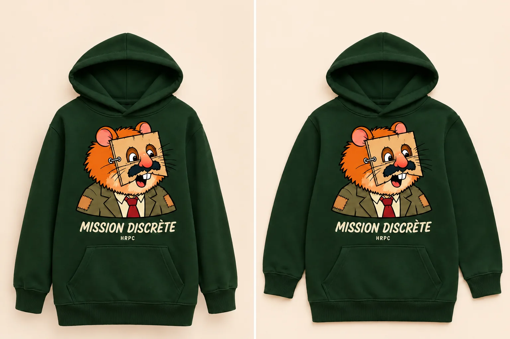
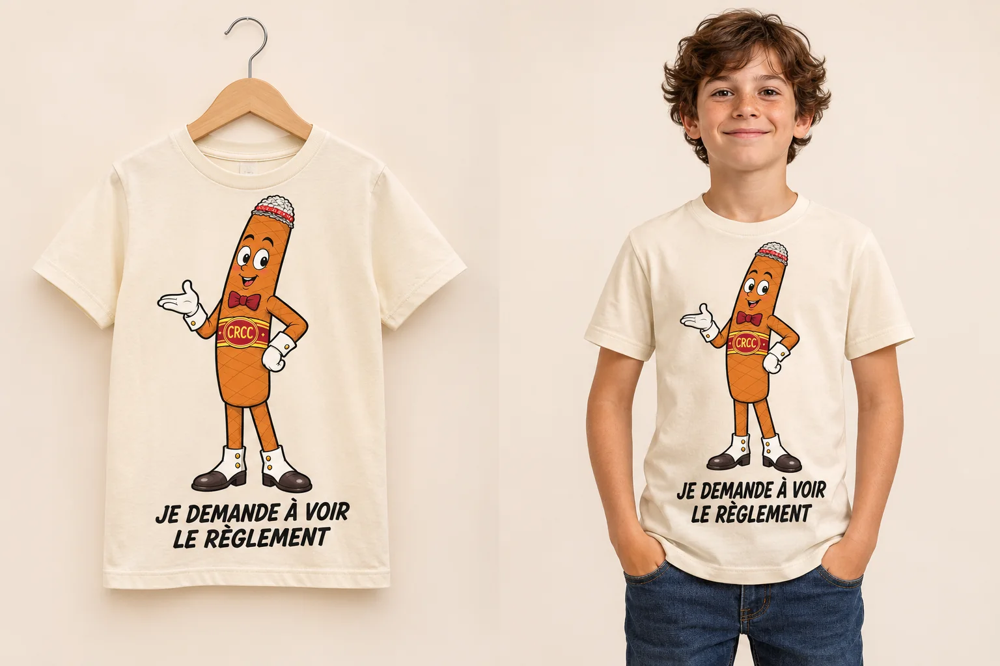

E.02 · HRPC
Hoodie HRPC Mission discrète
Vert forêt · Molleton de coton
« Je passe totalement inaperçu. »Voir la pièce et ses visuels →
Je demande à voir le règlement.

Le T-shirt à l’origine de la collection. Cigarolo en pied, gants blancs et assurance intacte : les petites contestations disposent désormais de leur tenue.
Grand Cigarolo sur le devant, avec l’inscription « JE DEMANDE À VOIR LE RÈGLEMENT ».
Coupe adaptée aux bras croisés. Aucune amélioration du comportement constatée.